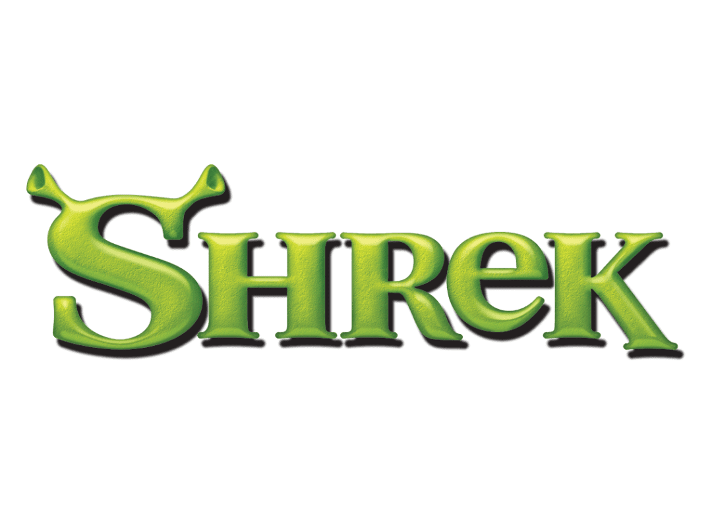

É um universo fictício no mundo das animações da DreamWorks, que retrata de forma cômica e inteligente situações do cotidiano e quebra estereótipos dos contos de fadas tradicionais.
Venha fazer parte da nossa equipe!